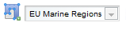

to activate the query by shape functionality.
to activate the query by shape functionality.
When the dataset selected is a raster dataset, the selection of a predefined geographical area will be enabled as shown in the following figure:
 Select a valid vector and then left click on the map to select a specific area: the system will shade the area, as shown in the figure:
Select a valid vector and then left click on the map to select a specific area: the system will shade the area, as shown in the figure:

The section below the map will help the user to identify the region/province selected:
Example for a province:

Example for a region:

When the dataset selected is a shapefile, the selection of predefined geographical will be disabled as shown in the following figure:
 Select a valid area by clicking directly on the map: the selection will made directly over the data saved into the layer.